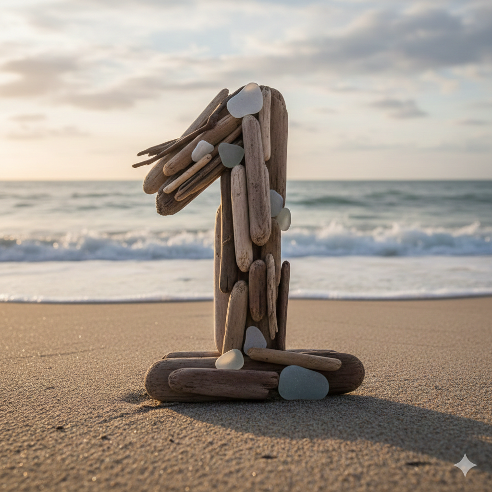
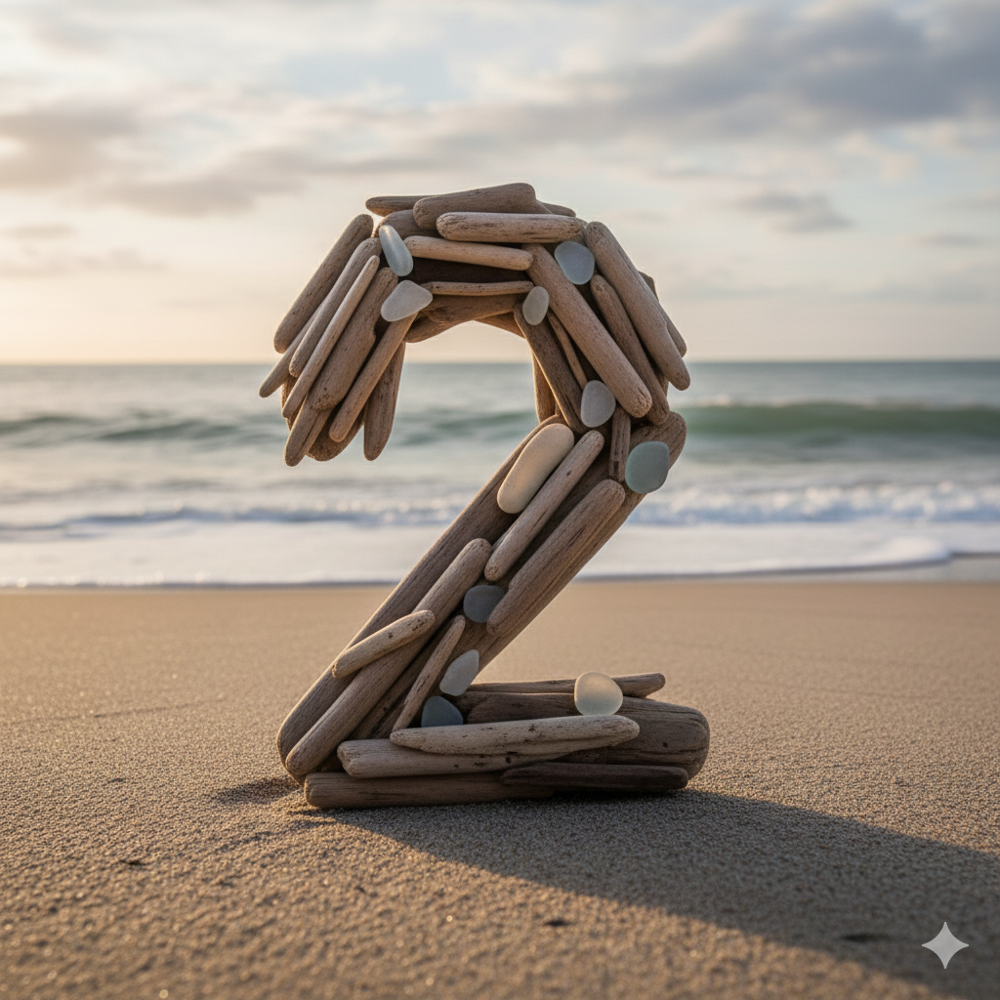
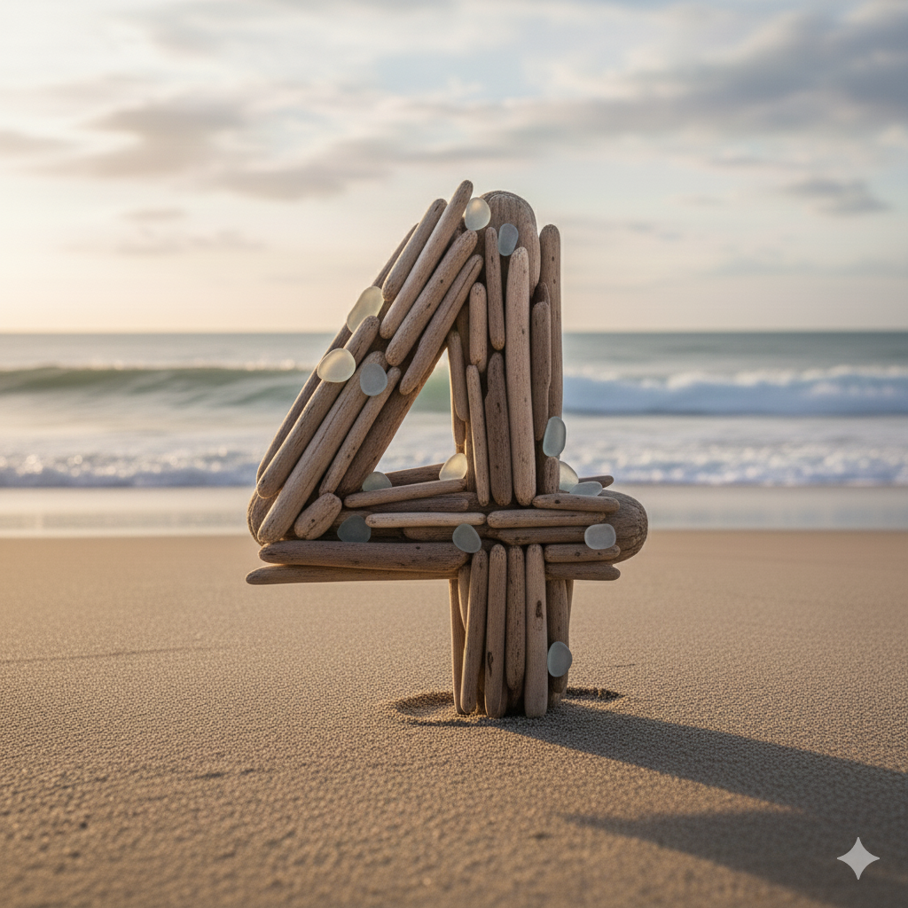
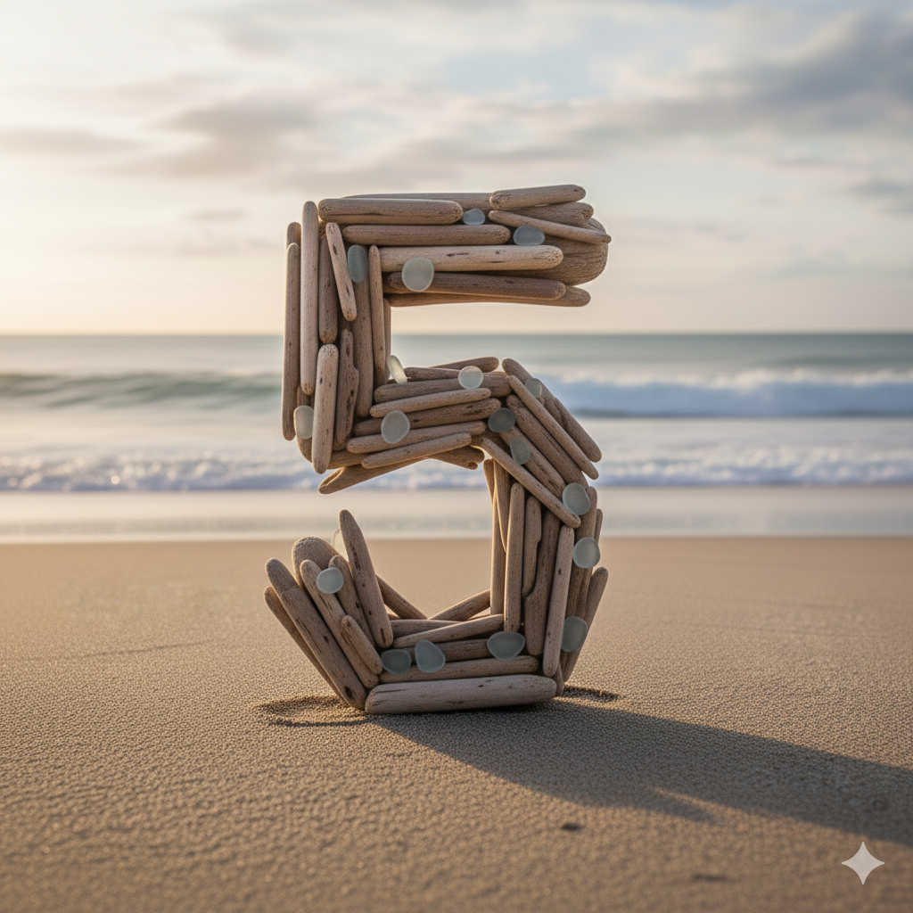

CONOZCA A NUESTRO EQUIPO

SUSO nuestro sumiller de cocina
Es un profesional especializado en vinos y bebidas, encargado de asesorar a los clientes, gestionar la carta de vinos y garantizar la mejor combinación entre comida y bebida.

XAVIER nuestro metre
Es el profesional encargado de dirigir el servicio en un restaurante, coordinar al personal de sala y garantizar que la atención al cliente sea excelente.
HEBER el mejor camarero del mundo
El mejor camarero del mundo, aquel que combina profesionalismo, empatía, rapidez y pasión por el servicio, logrando que cada cliente se sienta único y perfectamente atendido.

JUANLU nuestro cocinero
El cocinero con gran pasión, es quien cocina con el corazón, cuida cada detalle y transmite emoción y sabor en cada plato.

FACUNDO nuestro jefe de cocina
Un jefe de cocina apasionado, líder que transforma la creatividad y el amor por la gastronomía en platos únicos, inspirando a su equipo y sorprendiendo a cada comensal.